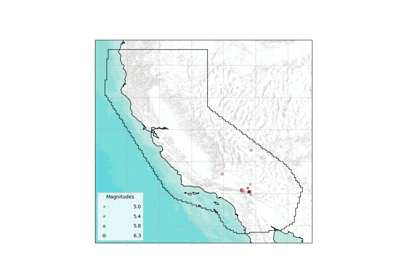
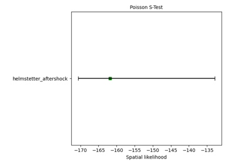
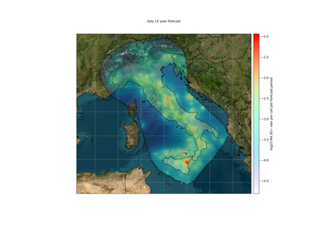
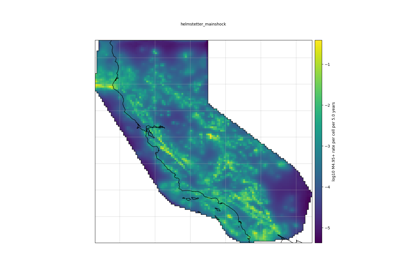
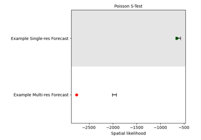
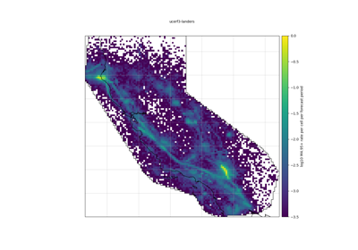

Tutorials
sphx_glr_tutorials_catalog_filtering.py
Catalogs operations

Catalog-based Forecast Evaluation
Catalog-based Forecast Evaluation

Grid-based Forecast Evaluation
Grid-based Forecast Evaluation

Plot customizations

Plotting gridded forecast

Quadtree Grid-based Forecast Evaluation
Quadtree Grid-based Forecast Evaluation

Working with catalog-based forecasts
Working with catalog-based forecasts